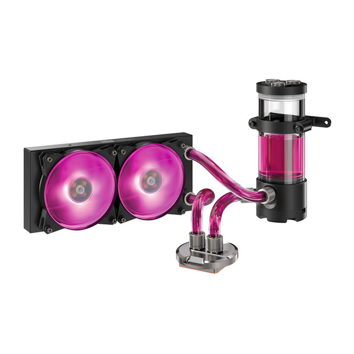

DISSIPATORE A LIQUIDO

Un sistema di raffreddamento a liquido per pc funziona grazie al continuo circolo del fluido refrigerante garantito dalla pompa. Il ciclo del fluido refrigerante è quindi il seguente: 1) Il fluido è immagazzinato nel serbatoio (questo componente potrebbe essere omesso, in tal caso viene l'impianto chiamato "circuito chiuso"). 2) La pompa preleva il fluido dal serbatoio e lo spinge all'interno del circuito fino al raggiungimento del waterblock. 3) Il fluido esce dal waterblock ad una temperatura leggermente superiore a quella di ingresso, mentre il waterblock ed il componente ad esso collegato vengono raffreddati . 4) Infine il liquido attraversa il radiatore, che ne dissipa parte del calore, e viene riversato nuovamente nel serbatoio. 5)Il ciclo mostrato sopra è solo un esempio delle diverse configurazioni possibili (si tratta della configurazione più comune e sicura), il fluido potrebbe infatti passare prima nel radiatore e poi nel waterblock, e le varianti possibili aumentano nel caso di un impianto che raffreddi 2 o più componenti. 6) La temperatura del fluido tende a variare in base al calore che viene fornito al liquido ed alla capacità di dissipazione del radiatore, ci si può ritrovare in tre situazioni: Il waterblock trasferisce più calore di quanto il radiatore ne possa dissipare, in questo caso la temperatura del liquido aumenta costantemente, mentre la temperatura del componente raffreddato aumenta esponenzialmente nel tempo. Il waterblock trasferisce lo stesso calore che il radiatore è in grado di dissipare, in questo caso si instaurerà una situazione di equilibrio, in cui sia il componente raffreddato che il fluido raggiungeranno un temperatura costante. Il waterblock trasferisce meno calore di quanto il radiatore ne possa dissipare, in quest'ultimo caso il fluido tenderà a raggiungere la temperatura ambiente e la temperatura del componente raffreddato sarà leggermente più alta (vicina a quella ambiente).